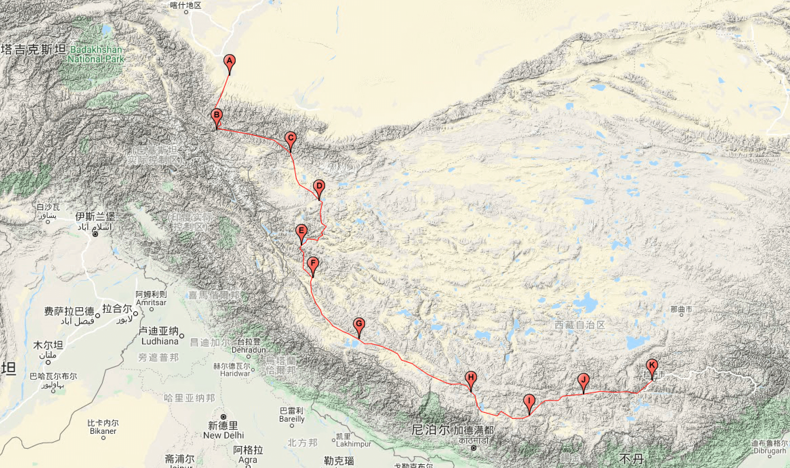
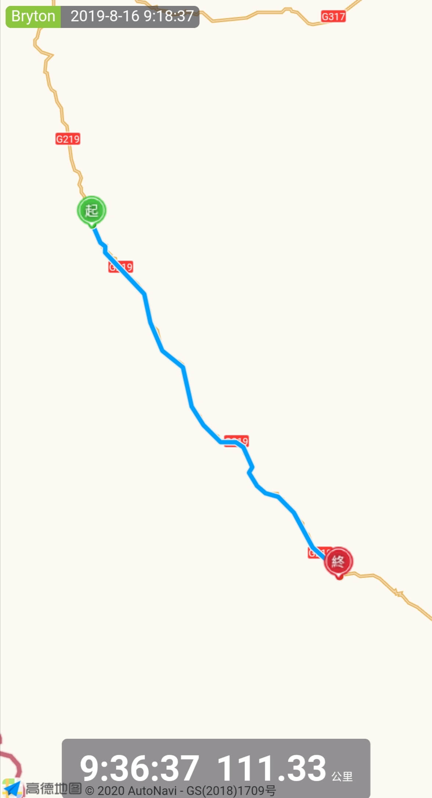
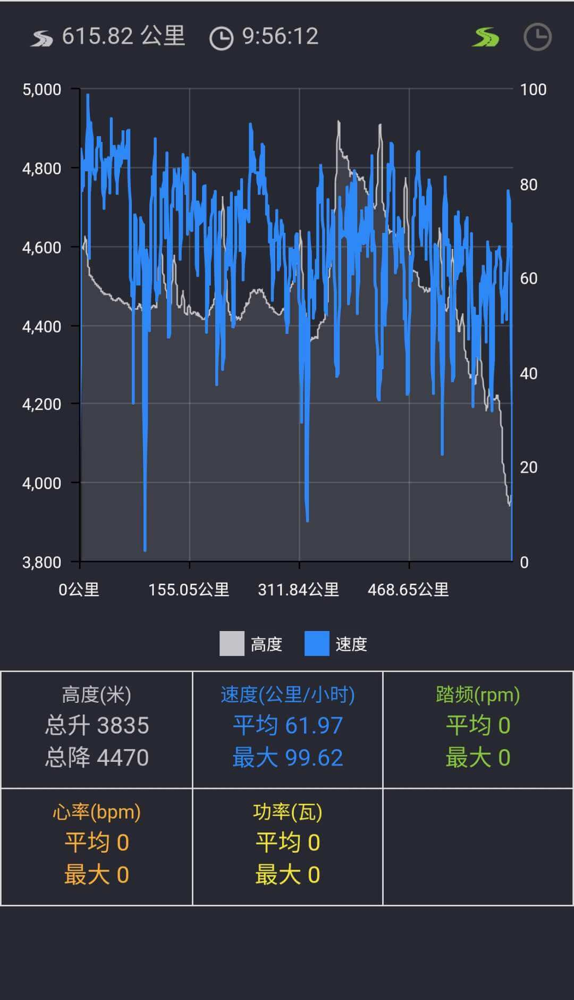

## <i class="fa fa-file-text-o"></i>&nbsp;目录（Table of Contents）
+ [I. 总路线图](#one)
+ [II. 景点](#two)
+ [III. 骑行路线](#three)
- [1、叶城县(白天鹅宾馆) - 柯克亚乡(乡政府)](#1)
- [2、柯克亚乡 - 阿克美其特村(居民家)](#2)
- [3、阿克美其特村 - 库地(川菜馆·骑友之家)](#3)
- [4、库地 - 206道班](#4)
- [5、206道班 - 黑恰道班](#5)
- [6、黑恰道班 - 三十里营房](#6)
- [7、三十里营房 - 大红柳滩](#7)
- [8、大红柳滩 - 甜水海(废弃板房·219国道3146处)](#8)
- [9、甜水海 - 泉水湖检查站(小卖部床位)](#9)
- [10、泉水湖检查站 - 松西村(藏民家床位)](#10)
- [11、松西村 - 多玛乡(巴蜀饭店床位)](#11)
- [12、多玛乡 - 日土县(鸿鑫宾馆)](#12)
- [13、日土县 - 噶尔县(恒远商务宾馆)](#13)
- [14、噶尔县 - 那不如村(泡温泉+住宿)](#14)
- [15、那不如村 - 门士乡(川渝饭店住宿)](#15)
- [16、门士乡 - 塔尔钦(青年旅舍·驴友之家)](#16)
- [17、塔尔钦 - 霍尔乡(东北青年旅社)](#17)
- [18、霍尔乡 - 马攸桥检查站(神仙客栈)](#18)
- [19、马攸桥检查站 - 拉萨(云措青年旅舍)](#19)
<h2 id="one"><i class="fa fa-circle-o-notch fa-spin"></i>&nbsp;总路线图</h2>

<h2 id="two"><i class="fa fa-star-o"></i>&nbsp;景点</h2>
<img data-src="../imgs/region-line/scenic-spot/xizang.gif" title="景点"/>
<h2 id="three"><i class="fa fa-spinner fa-pulse"></i>&nbsp;骑行路线</h2>
<h4 id="1">1、叶城县(白天鹅宾馆) - 柯克亚乡(乡政府)&nbsp;&nbsp;<i class="fa fa-bicycle fa-2x"></i></h4>
<h4 id="2">2、柯克亚乡 - 阿克美其特村(居民家)&nbsp;&nbsp;<i class="fa fa-bicycle fa-2x"></i></h4>
<h4 id="3">3、阿克美其特村 - 库地(川菜馆·骑友之家)&nbsp;&nbsp;<i class="fa fa-bicycle fa-2x"></i></h4>
<h4 id="4">4、库地 - 206道班&nbsp;&nbsp;<i class="fa fa-bicycle fa-2x"></i></h4>
<h4 id="5">5、206道班 - 黑恰道班&nbsp;&nbsp;<i class="fa fa-bicycle fa-2x"></i></h4>
<h4 id="6">6、黑恰道班 - 三十里营房&nbsp;&nbsp;<i class="fa fa-bicycle fa-2x"></i></h4>
<h4 id="7">7、三十里营房 - 大红柳滩&nbsp;&nbsp;<i class="fa fa-bicycle fa-2x"></i></h4>
<h4 id="8">8、大红柳滩 - 甜水海(废弃板房·219国道3146处)&nbsp;&nbsp;<i class="fa fa-bicycle fa-2x"></i></h4>
<h4 id="9">9、甜水海 - 泉水湖检查站(小卖部床位)&nbsp;&nbsp;<i class="fa fa-bicycle fa-2x"></i></h4>
<h4 id="10">10、泉水湖检查站 - 松西村(藏民家床位)&nbsp;&nbsp;<i class="fa fa-bicycle fa-2x"></i></h4>
<img data-src="../imgs/region-bike/xizang/10.jpeg" width="35%" title="10、泉水湖检查站 - 松西村(藏民家床位)"/>
<h4 id="11">11、松西村 - 多玛乡(巴蜀饭店床位)&nbsp;&nbsp;<i class="fa fa-bicycle fa-2x"></i></h4>
<h4 id="12">12、多玛乡 - 日土县(鸿鑫宾馆)&nbsp;&nbsp;<i class="fa fa-bicycle fa-2x"></i></h4>
<h4 id="13">13、日土县 - 噶尔县(恒远商务宾馆)&nbsp;&nbsp;<i class="fa fa-bicycle fa-2x"></i></h4>
<h4 id="14">14、噶尔县 - 那不如村(泡温泉+住宿)&nbsp;&nbsp;<i class="fa fa-bicycle fa-2x"></i></h4>
<h4 id="15">15、那不如村 - 门士乡(川渝饭店住宿)&nbsp;&nbsp;<i class="fa fa-bicycle fa-2x"></i></h4>

<h4 id="16">16、门士乡 - 塔尔钦(青年旅舍·驴友之家)&nbsp;&nbsp;<i class="fa fa-bicycle fa-2x"></i></h4>
<h4 id="17">17、塔尔钦 - 霍尔乡(东北青年旅社)&nbsp;&nbsp;<i class="fa fa-bicycle fa-2x"></i></h4>
<h4 id="18">18、霍尔乡 - 马攸桥检查站(神仙客栈)&nbsp;&nbsp;<i class="fa fa-bicycle fa-2x"></i></h4>
<h4 id="19">19、马攸桥检查站 - 拉萨(云措青年旅舍)&nbsp;&nbsp;<i class="fa fa-bicycle fa-2x"></i></h4>
